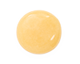
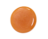
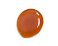

Die Imkerei
Wir sind eine kleine Familienimkerei in Bad Abbach. Unser Honig wird sorgfältig und schonend geerntet, verarbeitet und abgefüllt, um die Qualität und den unverfälschten Genuss des Naturproduktes Honig zu garantieren.
Direkt gegenüber dem Burgturm von Bad Abbach steht unser größter Bienenstand. Von hier aus können die Bienen zahlreiche Wildblumen, Kräuter und ungespritzte Obstbäume in den Wiesen der Nachbarschaft anfliegen. Etwa drei Kilometer entfernt befindet sich der zweite Standort für unsere geflügelten Helferinnen am Rande eines malerischen Fichtenwaldes.
Die Arbeit am Bienenvolk
Bienenbeuten sind die Behausungen, in denen die Bienen leben und ihre Waben bauen und ihre Brut aufziehen können. Die Beuten ermöglichen die Pflege der Bienenvölker und sind somit ein unverzichtbares Werkzeug in der Imkerei.
Die mit wichtigste Aufgabe des Imkers ist die Wabenkontrolle. Dabei werden die Bienenstöcke geöffnet und die Waben kontrolliert. Der Imker möchte sicherstellen, dass die Bienen genügend Platz für ihre Brut und den Honigvorrat haben und frei von Schädlingen sind.
Vom Nektar bis zum Honig
Die Bienen sammeln den Nektar der umliegenden Blüten mit ihrem Rüssel und geben ihn im Stock von Biene zu Biene weiter und ihn mit Enzymen anzureichern. Der so entstandene Honig wird in die Waben gefüllt, dort getrocknet und mit einer dünnen Wachsschicht versiegelt.
Das Verdeckeln der Honigwaben ist ein Zeichen für den Imker, dass der Honig zur Ernte bereit ist. Der Honig wird dann aus den Waben geschleudert, durch ein Sieb gefiltert und kann dan in Gläser abgefüllt werden.
Honigsorten

Frühlingsblüte
Cremig gerührt mit mildem und süßen Geschmack aus Löwenzahn, Raps, Wiesenblumen, Kirsche, Apfel, Johannisbeere. Ein wahres Fest der Frische!

Sommerblüte
Freuen Sie sich auf eine sonnengereifte Aromenmischung aus Sommerblumen, Klee, Lavendel, Wildkräutern, Robinie, Kastanie, Linde mit leuchtend goldener Farbe.

Fichtenwald
Der kräftige, leicht herbe Geschmack mit Aromen aus Fichte, Tannen, Wiesenblumen und Wildkräutern zeichnet nen diesen Honig aus.
Kontakt
Bei Interesse an unseren köstlichen Honigsorten oder dem Erwerb von Bienen, kontaktiere uns gerne unter imkereiengel@gmail.com. Wir freuen uns auf Anfragen!